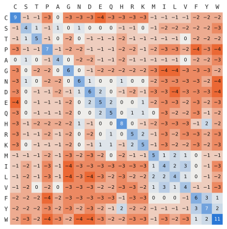
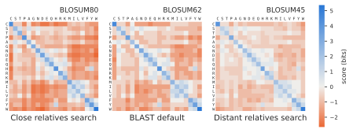

57 Scoring matrices
To align two proteins, you need a score for every pair of amino acids that can end up in the same column, as in the pairwise alignment chapter. With 20 amino acids that is a \(20 \times 20\) table, and since a pair scores the same whichever sequence each amino acid is in, there are 210 different scores to decide. The scores should be positive for pairs that turn up together in related proteins more often than by chance, and negative for pairs that turn up together less often. A score of “same or different”, as we used for DNA, cannot do this. In real proteins, an isoleucine is often replaced by a valine, which is similar in size and also hydrophobic, while a tryptophan is almost never replaced by a glycine. The most widely used tables of this kind are the BLOSUM matrices (Henikoff and Henikoff, 1992), and BLOSUM62 is the default in BLAST (see the BLAST chapter).
The BLOSUM matrices are counted from real proteins. The data are the BLOCKS database: more than 2,000 ungapped multiple alignments of the conserved regions of more than 500 protein families. Because the blocks have no gaps, each column is a set of amino acids that are taken to descend from the same ancestral amino acid. Gaps therefore play no part in the matrix, and the gap scores for protein alignment are chosen separately.
The idea is to go through every column of every block, look at every pair of sequences, and count which two amino acids they have in that column. One problem is that some protein families are represented by many nearly identical sequences, which would dominate the counts and tell us mostly about pairs that have barely had time to change. So before counting, the sequences in each block are clustered: a sequence joins a cluster if it is at least \(X\) percent identical to any sequence already in it. A sequence in a cluster of \(n\) sequences then gets the weight \(1/n\), so each cluster counts as a single sequence, and pairs of sequences within a cluster are not counted at all. For every pair of sequences in different clusters, the product of their weights is added to the count \(f_{ij}\) for the two amino acids \(i\) and \(j\) they have in that column. Summed over all columns of all blocks, these counts are turned into scores, as described below.
The threshold \(X\) gives the matrix its name: \(X = 62\) gives BLOSUM62, \(X = 80\) gives BLOSUM80, and \(X = 45\) gives BLOSUM45. A high threshold merges few sequences, so the counts are dominated by close relatives, and the matrix is suited to comparing closely related proteins. A low threshold merges away the close relatives, so only distantly related pairs are counted, and the matrix is suited to distant relatives.
From counts to scores
The counts are first turned into the observed frequency of each pair,
\[ q_{ij} = \frac{f_{ij}}{\sum_{i \le j} f_{ij}}, \]
where the sum runs over every pair once, so that A–S and S–A are the same pair. From these, the background frequency of each amino acid is its share of all the members of all the pairs. An amino acid paired with itself is both members of the pair, and one paired with another is half of it:
\[ p_i = q_{ii} + \sum_{j \ne i} \frac{q_{ij}}{2}. \]
If amino acids were paired at random, the pair \(i\)–\(j\) would turn up with the expected frequency
\[ e_{ij} = \begin{cases} p_i^2 & \text{if } i = j \\ 2 p_i p_j & \text{if } i \ne j, \end{cases} \]
where the 2 is there because \(i\) can be in either sequence. The score compares what was observed with what chance would give, as a log-odds score:
\[ s_{ij} = \log_2 \frac{q_{ij}}{e_{ij}}. \]
A pair seen twice as often as chance scores 1, one seen half as often scores −1, and one seen exactly as often as chance scores 0. Because the logarithm has base 2, the score is measured in bits. The published matrix scales the scores and rounds them to whole numbers. BLOSUM62 is in half-bits, \(S_{ij} = \mathrm{round}(2 \log_2 (q_{ij}/e_{ij}))\), while some other matrices, such as BLOSUM50, are in thirds of a bit.
To see the steps in action, take a tiny block of five sequences and three columns, and skip the clustering:
AAC
ASC
AAC
SAC
AAWFive sequences make 10 pairs in each column, so 30 pairs in all. The background frequencies come out as \(p_A = 0.533\), \(p_C = 0.267\), \(p_S = 0.133\) and \(p_W = 0.067\), and the four pairs that occur get these scores:
| Pair | \(f\) | \(q\) | \(e\) | \(\log_2(q/e)\) | Half-bits |
|---|---|---|---|---|---|
| A–A | 12 | 0.400 | 0.284 | 0.49 | 1 |
| A–S | 8 | 0.267 | 0.142 | 0.91 | 2 |
| C–C | 6 | 0.200 | 0.071 | 1.49 | 3 |
| C–W | 4 | 0.133 | 0.036 | 1.91 | 4 |
Two things in the table may surprise you. C–W scores higher than C–C, and A–S scores higher than A–A, even though identical amino acids are paired more often. Scores measure how surprising a pair is compared with chance, and S and W are rare, so seeing them at all in a pair is surprising. And the pairs that never occur, like A–C, have \(q = 0\), which would give them a score of minus infinity. With so little data, the matrix is odd. The real BLOCKS data hold enough pairs that every combination is seen.
Reading the matrix
Figure 57.1 shows the whole of BLOSUM62. The diagonal is all positive, from 4 to 11: an amino acid is most often replaced by itself, meaning not replaced at all. Rare amino acids score highest when they match, because a match between two rare amino acids is unlikely by chance: tryptophan with tryptophan scores 11 and cysteine with cysteine 9, while alanine with alanine scores 4. Off the diagonal, the scores run from −4 to 3, and the positive ones form small groups of chemically similar amino acids: isoleucine, leucine, valine and methionine; phenylalanine, tyrosine and tryptophan; lysine and arginine; aspartate and glutamate.
The log-odds form makes the score of an alignment meaningful. Think of two ways an aligned pair of sequences could have come about. Either they are related, so that each column is a pair drawn with the observed frequencies \(q_{ij}\), or they are unrelated, so that each amino acid is drawn on its own with the background frequencies. The score of an ungapped alignment is the sum of the scores of its columns, and a sum of logarithms is the logarithm of a product. So the total score in bits is
\[ S = \log_2 \frac{P(\text{alignment} \mid \text{related})}{P(\text{alignment} \mid \text{unrelated})}. \]
Every extra bit doubles how much more likely the alignment is if the sequences are related, and every half-bit unit in BLOSUM62 multiplies it by \(\sqrt{2}\). Here is an ungapped alignment of two short peptides, scored with BLOSUM62:
M K T A Y I A K
M K S A F V A R
5 5 1 4 3 3 4 2 total 27Every column scores positive: four identities, and four substitutions between similar amino acids. The relationship goes both ways, too. Any score matrix, even one made up by hand, implies a set of target frequencies \(q_{ij} = p_i p_j \, 2^{s_{ij}}\): the frequencies of pairs in related sequences that it is best at finding (Altschul, 1991).
Two numbers summarize a matrix. The relative entropy \(H = \sum_{i \le j} q_{ij} \, s_{ij}\) is the average score per column in true relatives: how much information each aligned pair carries about whether two sequences are related. The expected score \(E = \sum_{i \le j} e_{ij} \, s_{ij}\) is the average score per column for unrelated sequences. As you saw for local alignment, \(E\) must be negative for local alignment to work, or random sequences would build up long high-scoring alignments (Karlin and Altschul, 1990). For BLOSUM62, \(H = 0.6979\) bits and \(E = -0.5209\) bits (Henikoff and Henikoff, 1992). A higher BLOSUM number gives a higher \(H\): more information per column, so shorter alignments can be detected, but only between close relatives.
Using the matrix
You do not have to type in the matrix. Biopython has BLOSUM62 and many other matrices built in, and you look up a score with two amino acids, as in the Biopython chapter:
from Bio.Align import substitution_matrices
blosum62 = substitution_matrices.load("BLOSUM62")
print(blosum62["W"]["W"])
print(substitution_matrices.load()) # the names of all the matricesBesides the 20 amino acids, the matrix has rows for B (aspartate or asparagine), Z (glutamate or glutamine), X (any amino acid) and * (a stop codon). A substitution matrix plugs straight into the Needleman-Wunsch and Smith-Waterman algorithms of Chapter 53 in place of the simple match and mismatch scores. The gap scores have to be chosen separately, and are found by trial. The default in blastp` is BLOSUM62 with an affine gap score of 11 to open a gap and 1 to extend it.
PAM, for contrast
Before BLOSUM, the standard matrices were the PAM matrices of Margaret Dayhoff and colleagues (Dayhoff et al., 1978). They were built differently. Dayhoff took closely related proteins, at least 85% identical, built evolutionary trees for them, and counted the substitutions along the branches. From those counts she made the matrix PAM1, which describes the changes expected when there has been one accepted substitution per 100 amino acids. Matrices for longer distances were made by applying PAM1 repeatedly, as a model like the ones in A model of DNA evolution does over time: PAM250 is PAM1 applied 250 times, and then turned into log-odds scores. So the PAM matrices for distant relatives are extrapolated from close relatives, while each BLOSUM matrix is counted directly from sequences at its distance.
The numbers run in opposite directions. A high PAM number means distant relatives, while a high BLOSUM number means close ones. Roughly, PAM250 corresponds to BLOSUM45, PAM160 to BLOSUM62, and PAM120 to BLOSUM80. When Henikoff and Henikoff compared them in database searches, BLOSUM62 found relatives better than the PAM matrices, and it became the default in BLAST.
Choosing a matrix
For most searches, BLOSUM62 is a good choice. If you are looking for close relatives, BLOSUM80 is better, and for distant relatives BLOSUM45. NCBI also bases its advice on the length of the query, because a short query gives a short alignment, and a short alignment can only stand out from chance if each column carries a lot of information: PAM30 for queries shorter than 35 amino acids, PAM70 for 35 to 50, BLOSUM80 for 50 to 85, and BLOSUM62 for anything longer.
Figure 57.2 shows why the three BLOSUM matrices suit different distances. The matrices are published in different units, BLOSUM62 in half-bits and the other two in thirds of a bit, so the figure converts every score to bits to make them comparable. Going from BLOSUM45 to BLOSUM80, the diagonal gets darker blue and the rest of the matrix darker orange. On average an identity is worth 2.3 bits in BLOSUM45 and 3.1 bits in BLOSUM80, while a substitution costs 0.45 bits in BLOSUM45 and 0.98 bits in BLOSUM80. BLOSUM80 was counted from close relatives, where substitutions are rare, so it treats every substitution as strong evidence against a relationship. BLOSUM45 was counted from distant relatives, where substitutions are common, so it forgives them. The relative entropy grows accordingly, from 0.3795 bits per column for BLOSUM45 to 0.6979 for BLOSUM62 and 0.9868 for BLOSUM80.

Every substitution matrix rests on two simplifications. It assumes that each position in a protein evolves on its own, and that the same scores apply at every position. Neither is true. An amino acid buried in the core of a protein is under very different constraints from one on its surface. The matrices work well anyway, which says more about how useful a simple model can be than about how proteins evolve. Even the matrix itself is not quite what it was meant to be: the BLOSUM62 that everyone uses was computed with a mistake in the clustering code, and the corrected matrix turned out to find relatives slightly worse (Styczynski et al., 2008).